A short progress report on Shelfie, a personal book-tracking web application ("Untappd for books") targeting Dutch readers first. This update covers the seven working days of development since project kickoff on 24 April 2026.
1. Overview
Shelfie is a private reading journal: a user adds the books they own to their shelf, tracks reading progress, and revisits what they’ve read. The MVP is strictly personal library — social features, recommendations, and native mobile clients are deliberately deferred. The user base is Dutch first; the external metadata pipeline prioritises the Royal Library (KB) and CB (Centraal Boekhuis) before falling back to international sources.
The system is composed of three deliverables, all in this monorepo:
| Deliverable | Purpose |
|---|---|
|
One Spring Boot 3.3 service that owns the data model, the external metadata lookup pipeline, and both API surfaces. |
|
The end-user single-page app — sign-in, journal, library, add flows. |
|
The internal Maintenance Portal for operators and product managers — user administration, catalog moderation, lookup analytics, feature flags. |
1.1. At a glance
| Indicator | Value |
|---|---|
Calendar days since kickoff |
7 |
Database migrations applied |
34 |
Backend REST controllers |
19 |
Backend automated tests (unit + slice + integration) |
77 |
Frontend automated tests (Vitest, MSW-backed) |
28 |
MVP sub-iterations completed |
0.1 + 0.2 + 0.3 (functionally) |
Optional advanced features behind flags |
bulk shelf-photo import, barcode scanning, LLM-agentic lookup fallback, mood/progress journal |
The MVP scope from the functional design (auth, manual add, ISBN add, library list, status/rating/notes/dates, search, profile, password reset, GDPR export+delete, i18n) is functionally complete. Optional add-flows (barcode, shelf-photo bulk import, agentic search) and the Maintenance Portal are delivered behind feature flags and additional configuration. Production deployment has not yet been performed; the app has been validated end-to-end on developer machines.
2. Development progress
The work has been organised as a strict step-by-step plan
(project-plan/README.md). Each step lands as one commit on master with
green CI; later steps build on the assumption that earlier ones are merged.
2.1. Timeline
The following Gantt summarises the seven days from kickoff to the present.
Dates are sourced from the git log of master.
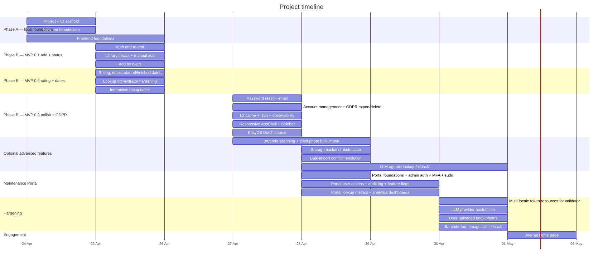
2.2. Highlights, week by week
- Week 1 (24–25 April) — foundations and the core add/track loop
-
The repository was scaffolded with a Spring Boot backend, Vite/React frontend, Postgres-backed integration tests, and CI on every PR. Authentication (register, login, logout, session cookies, CSRF, Argon2id) landed first, then the library data model (
Book,LibraryEntry), manual entry, ISBN lookup across three external sources (KB, Open Library, Google Books) with a priority-ordered orchestrator, and the rating/notes/dates editor for entries. By end of day 25 April the MVP 0.1 + 0.2 scope was functionally complete. - Week 2 (27–29 April) — MVP 0.3, low-friction add, Maintenance Portal
-
Password reset by email, profile editing, GDPR export and account deletion, locale-aware error messages, and a persistent observability + L2 cache layer were added. The Dutch CB (Centraal Boekhuis) source joined the lookup chain. A new responsive
AppShellintroduced the desktop sidebar.
Three optional advanced add-flows were prototyped behind feature flags: a camera-based barcode scanner, shelf-photo bulk import (vision-language model extracts titles from a photo of a bookshelf), and an LLM-agentic search fallback when ISBN lookup yields nothing. A user-in-the-loop conflict resolution flow turns ambiguous bulk-import items into a guided review.
In parallel, the Maintenance Portal (web-admin/) was scaffolded with its
own admin security chain, MFA enrolment + verification, sudo prompts on
sensitive actions, write-audit interceptor, user actions (lock, unlock, GDPR
export, delete), feature-flag administration, audit-log viewer, and lookup
metrics + analytics dashboards (materialised views; live charts).
- Week 3 to date (30 April – 1 May) — hardening, photos, engagement
-
The validator gained multi-locale token resources (NL/DE/FR/EN) so OCR drift on Dutch covers no longer false-rejects. The LLM integration was abstracted behind a provider interface (Ollama and OpenAI today; Anthropic deferred). Users can now upload a photo of their physical copy, stored in a configurable filesystem-or-S3 blob store. A barcode-from-image fallback handles cameras that struggle with live scans.
The most recent change is the Journal home page: a calm daily entry point that lets the reader log page progress and stamp moods on the book they are currently reading, alongside week-stats, a "this puts you longer than X" pace comparator, and an "on this day, last year" memory card.
2.3. Risks and open items
-
Production deployment not yet performed. The app has been validated locally end-to-end (Postgres + Mailhog via Docker Compose, Testcontainers for CI). A reverse-proxy + cloud Postgres deployment is the next milestone.
-
Quote licensing in the Journal page. Two of the bundled literary epigraphs (Reve, Bordewijk) are not yet public domain in the EU. They are flagged in
frontend-design/home-functional-design.md§11 and must be swapped before any public launch. -
Optional sidecars are off by default in production. Bulk-import and LLM-agentic search require either a self-hosted vision model or an OpenAI API key; the deployment posture is an explicit decision, not a default.
3. Application — end-user web app
The end-user app at / is what a reader interacts with. It is a single-page
application (React + TypeScript + Tailwind) served same-origin with the API
so a single secure HTTP-only session cookie covers both. The interface ships
in Dutch and English; the user’s choice is stored on their account.
3.1. Sign-in and onboarding
A returning user signs in with email + password. New users register on the sign-up page. Forgotten passwords are reset by email link. Sessions live in a secure HTTP-only cookie; the SPA never sees the credential after submission.
|
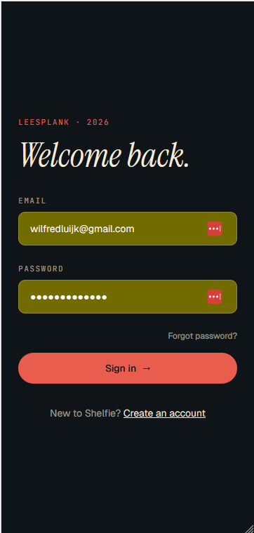 Figure 1. Screenshot — Sign-in
|
|
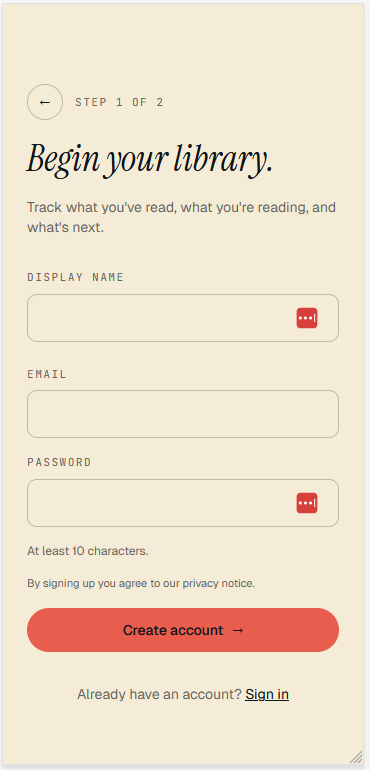 Figure 2. Screenshot — Sign-up
|
|
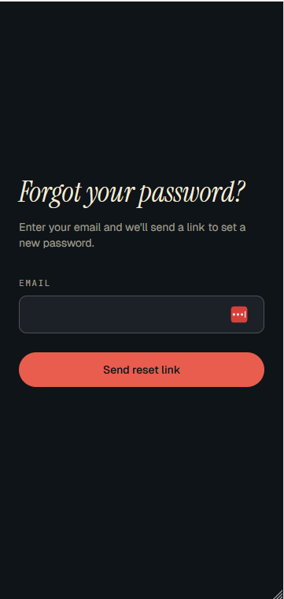 Figure 3. Screenshot — Forgot password
|
3.2. Home — the reading journal
The default landing page after sign-in. A calm, single-column journal that makes the two most-frequent actions effortless: logging today’s page and stamping a mood. The page also surfaces a rotating literary epigraph (chosen deterministically per day and per language), this week’s pages-turned chart, a "you’re now longer than X" pace comparator drawn from the user’s own shelf, and an "on this day, last year" memory card if a finished book matches roughly 365 days ago.
|
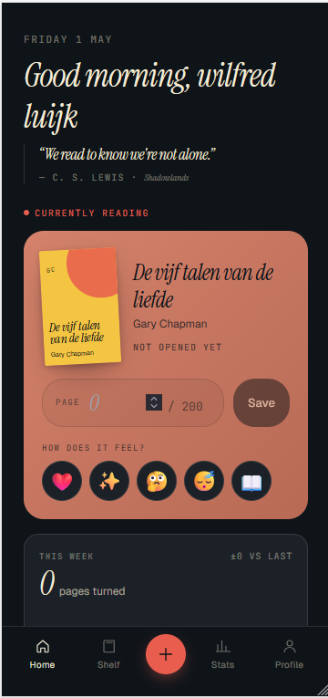 Figure 4. Screenshot — Home (Journal) — mobile
|
|
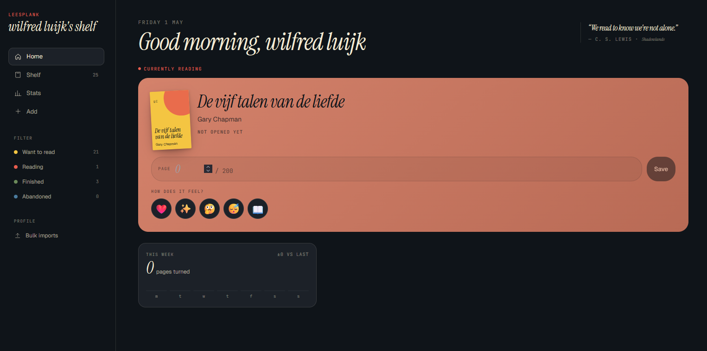 Figure 5. Screenshot — Home (Journal) — desktop
|
3.3. Library list
The user’s full shelf. Filterable by status (Want to read · Reading ·
Finished · Abandoned) and rating; sortable by added date, title, author, or
rating; searchable by title or author. Two view modes (grid and list) with
the choice persisted client-side. Status changes flow through one
unified PATCH endpoint that auto-populates started_at / finished_at on
the relevant transitions.
|
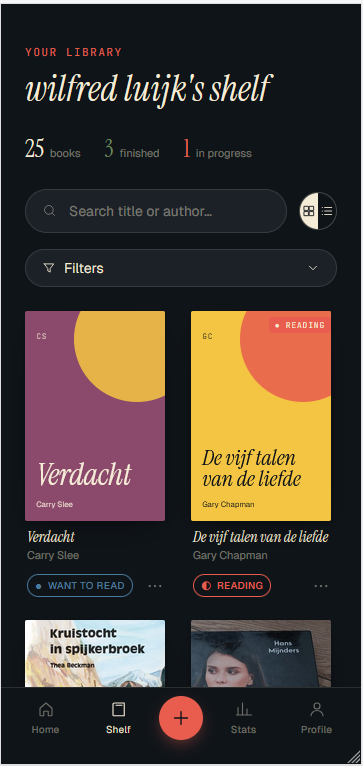 Figure 6. Screenshot — Library list (grid view)
|
|
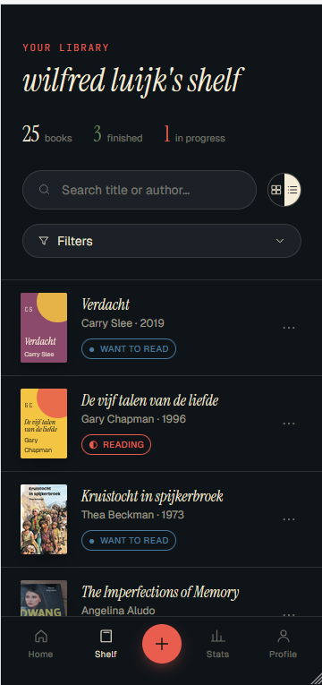 Figure 7. Screenshot — Library list (list view)
|
3.4. Library entry detail
One book’s per-user state — status, rating, started/finished dates, free-text notes, and the user’s own photo of the physical copy if uploaded. Catalog metadata (title, authors, publisher, language, page count, ISBN) is rendered read-only; the user controls only their own reading state.
|
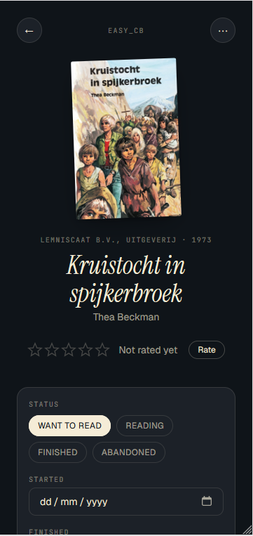 Figure 8. Screenshot — Entry detail
|
3.5. Add a book
Three add-flows, presented as a single screen with mode tabs:
-
By ISBN — scan or type an ISBN-13 / ISBN-10. The backend looks the book up against KB → CB → Open Library → Google Books in priority order with per-source timeouts and falls back to a manual-entry pre-fill if nothing matches in 3 s.
-
By barcode — live camera scan; falls back to a still-image upload when the live scanner cannot acquire a focus.
-
Manual — when the book is genuinely off-catalogue, the user enters title, authors, and any optional metadata. The resulting record is private to the creator (per functional design §6.5).
|
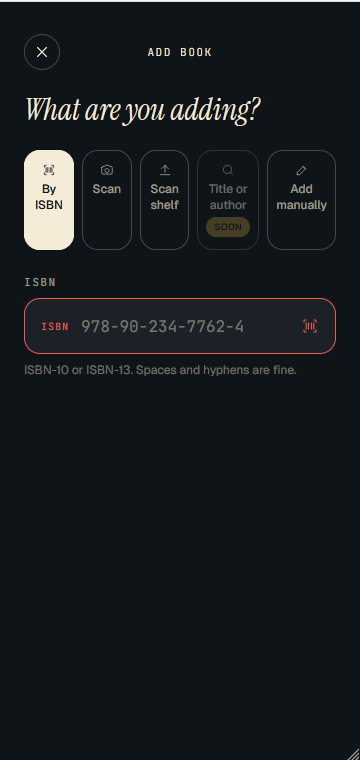 Figure 9. Screenshot — Add by ISBN
|
|
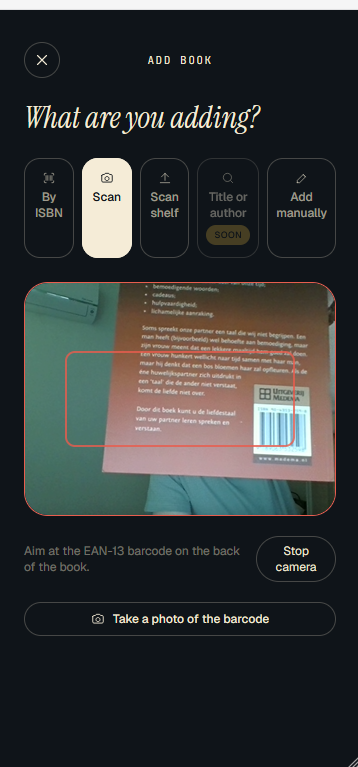 Figure 10. Screenshot — Add by barcode
|
|
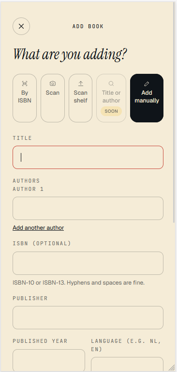 Figure 11. Screenshot — Manual entry
|
3.6. Shelf scan (optional, behind feature flag)
Power users can take a photo of an entire bookshelf and let the system extract every spine in one go. The flow is a fourth tab on the Add Book screen and runs a three-stage pipeline server-side: ingest the photos, read titles + authors with a vision-language model, then reconcile each detected book against the standard ISBN / title lookup chain.
Step 1 — Choose a shelf photo
The "Scan shelf" tab sits alongside the per-book add modes. Up to five images of 8 MB each can be uploaded per import. The "Scan shelf" CTA hands the photos to the worker.
|
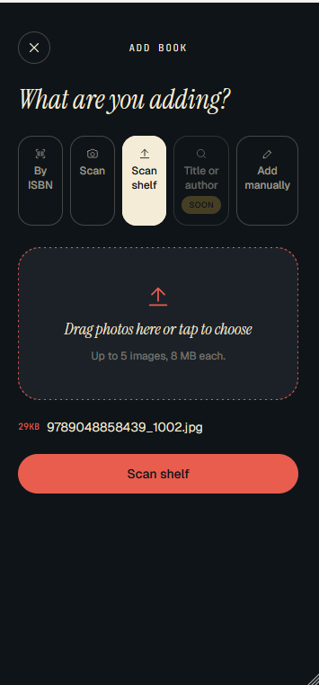 Figure 12. Screenshot — Shelf scan, step 1: choose photos
|
Step 2 — Extraction in progress
The worker pipeline is visible to the user as a four-stage checklist — Received, Reading photos, Looking up matches, Ready to review — with the active stage highlighted. Detected book covers stream in as the vision model finishes each spine.
|
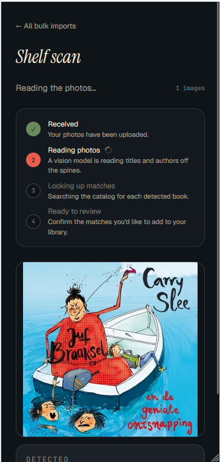 Figure 13. Screenshot — Shelf scan, step 2: extraction in progress
|
Step 3 — Review the matches
Once the pipeline lands in Ready to review the user walks through each detected book and confirms the catalog match. Items the system cannot match confidently are flagged (e.g. LLM search failed) and resolved one-by-one — the user can rescan an ISBN, re-prompt the LLM with a correction, type a manual entry, or discard. Confirming the batch with Finish review commits the matched books to the user’s library.
|
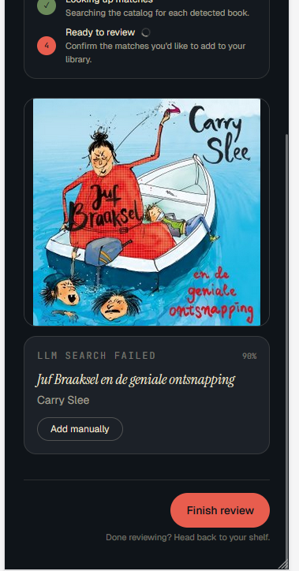 Figure 14. Screenshot — Shelf scan, step 3: per-book review
|
Bulk imports list
Past shelf scans are listed under Bulk imports, reachable from the account page. Each entry is a re-openable review using the same conflict-resolution UI as step 3.
|
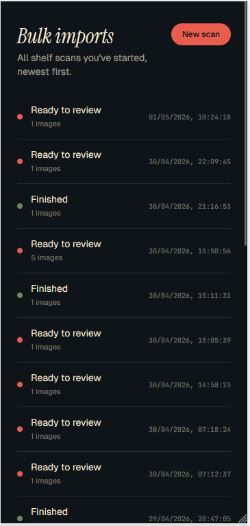 Figure 15. Screenshot — Bulk imports list
|
3.7. Account
Profile editing (display name, locale), email change (re-confirms current password), password change, an entry point to past bulk imports, GDPR data export (one-click JSON download), and account deletion (typed-confirmation gated).
|
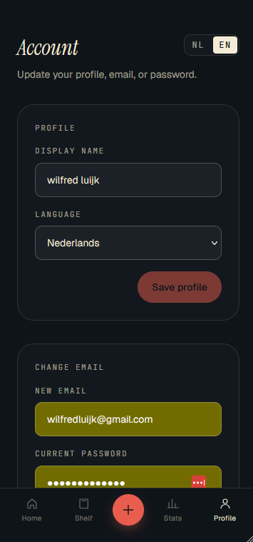 Figure 16. Screenshot — Account: profile, language, email, password
|
|
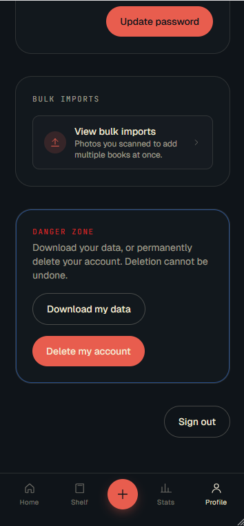 Figure 17. Screenshot — Account: bulk imports nav, GDPR export, danger zone
|
4. Maintenance Portal — internal admin frontend
The Maintenance Portal at /admin/ is the operator and product-manager
control plane. It runs in the same Spring Boot process and the same
PostgreSQL instance as the public app, but uses a separate React bundle, a
separate cookie name, a separate filter chain, and is not linked from the
public app (noindex, excluded from the sitemap). In production, admin
sign-in is gated by mandatory TOTP MFA, and every write action is captured
by an audit interceptor.
|
MFA in local / development deployments. The portal supports mandatory
TOTP MFA (enrolment + per-session verification) and that is the production
posture. For developer convenience MFA is disabled in the local profile
( |
4.1. Sign-in and sudo
Operators sign in with email + password. With MFA enabled (production), a TOTP code is required after the password step. Sensitive write actions — e.g. lock a user, force-logout, run a GDPR delete — additionally require a fresh sudo prompt within a five-minute window, so knowing the password is not enough to perform a destructive operation.
|
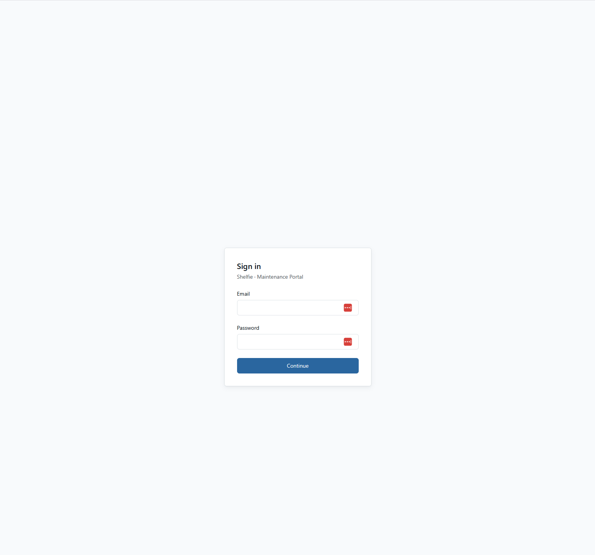 Figure 18. Screenshot — Admin sign-in
|
4.2. Overview
A landing dashboard showing the system’s health pulse — active users, recent sign-ups, lookup error rate, sidecar reachability, current feature-flag set.
|
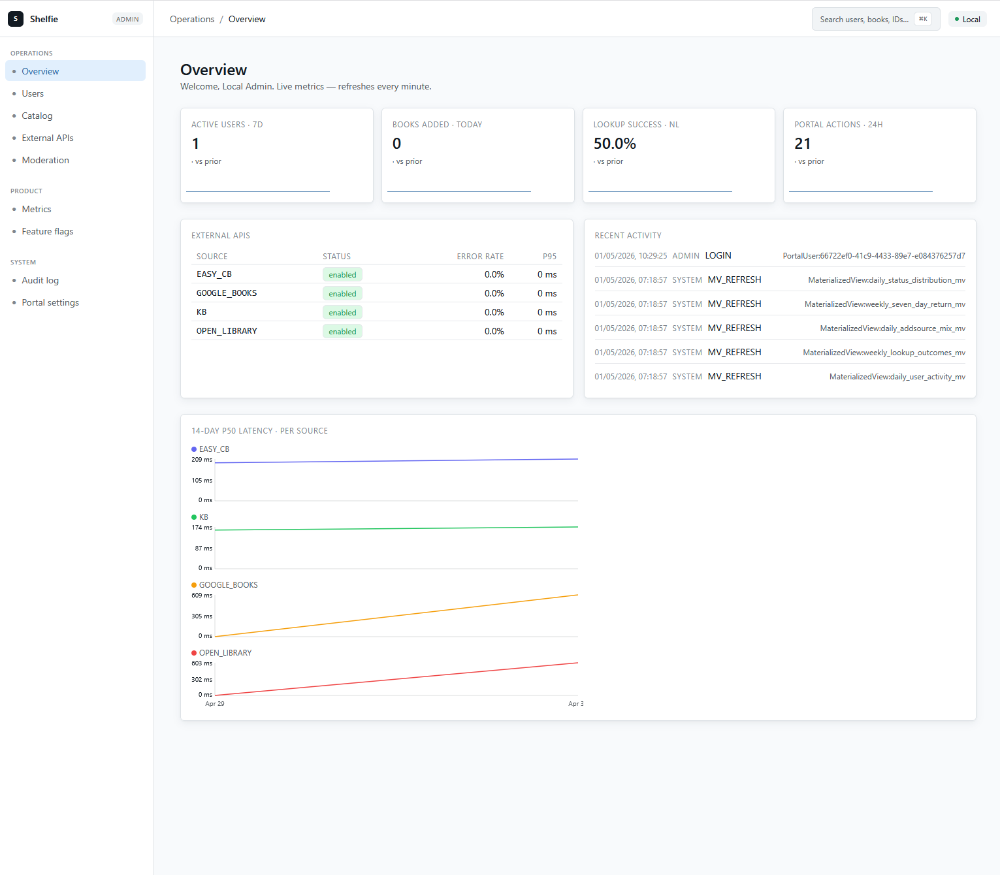 Figure 19. Screenshot — Overview dashboard
|
4.3. Users
Paginated list of accounts; per-user detail page shows the user’s library at a glance, recent activity, MFA status, and the privileged actions (lock / unlock, force-logout, GDPR export, delete). Every privileged action is sudo-gated and produces an audit-log entry.
|
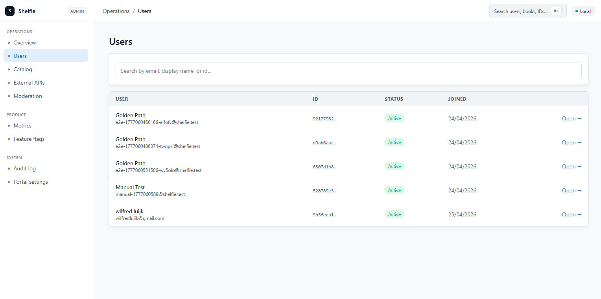 Figure 20. Screenshot — Users list
|
|
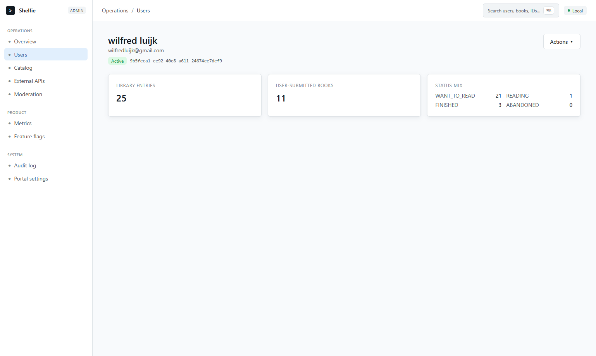 Figure 21. Screenshot — User detail (with privileged actions)
|
4.4. Catalog
Browse catalog books, inspect a record, and merge duplicates — a common operational need when two external sources yielded near-identical rows. The merge flow has a 7-day undo window so an accidental merge is reversible.
|
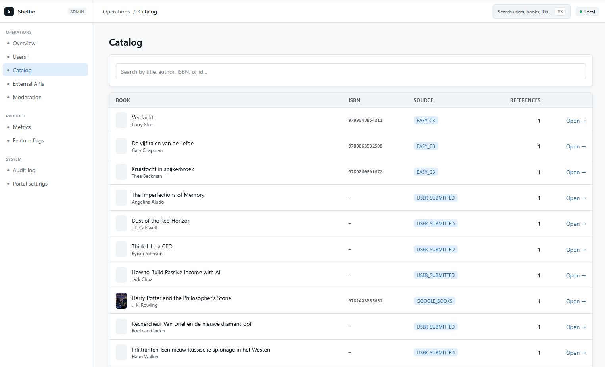 Figure 22. Screenshot — Catalog list
|
|
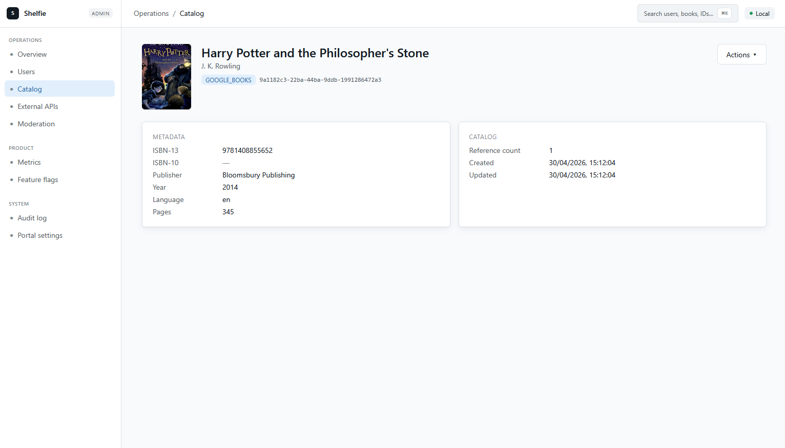 Figure 23. Screenshot — Book detail with merge
|
4.5. Sources, moderation, feature flags
-
Sources — toggle the external lookup adapters (KB, CB, Open Library, Google Books) on or off, and read their reachability + recent error rate.
-
Moderation — review user-submitted books that have been hidden by policy; revert the decision when a false positive is found.
-
Feature flags — flip the optional-feature flags (bulk import, LLM-agentic search, journal mood log, …) at runtime without a deploy. The flags screen mirrors the layout of the sources panel and is reachable from the same nav group; a screenshot is omitted from this update.
|
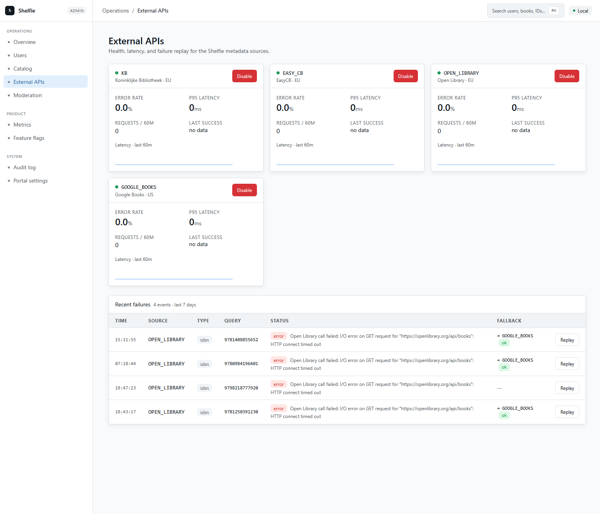 Figure 24. Screenshot — Sources panel
|
|
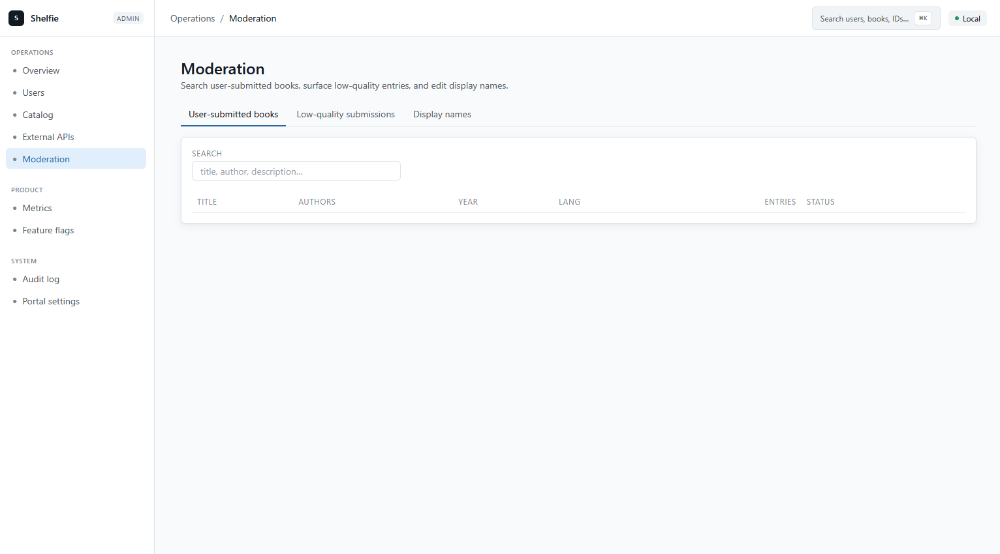 Figure 25. Screenshot — Moderation queue
|
4.6. Metrics and analytics
A multi-tab metrics surface: an overview, an analytics dashboard backed by nightly-refreshed materialised views (daily active users, lookup outcomes, seven-day return, add-source mix, status distribution), an LLM panel (provider health, per-iteration latency, token in/out), and a lookup panel that lets product managers replay any single ISBN lookup attempt with full timing and outcome breakdown.
|
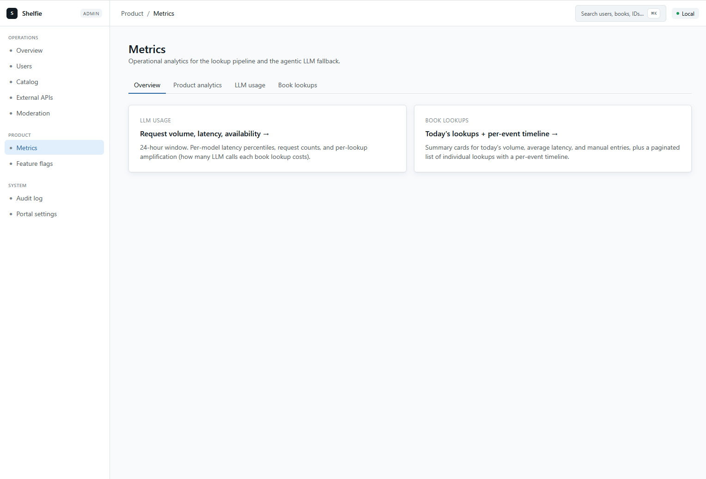 Figure 26. Screenshot — Metrics overview
|
|
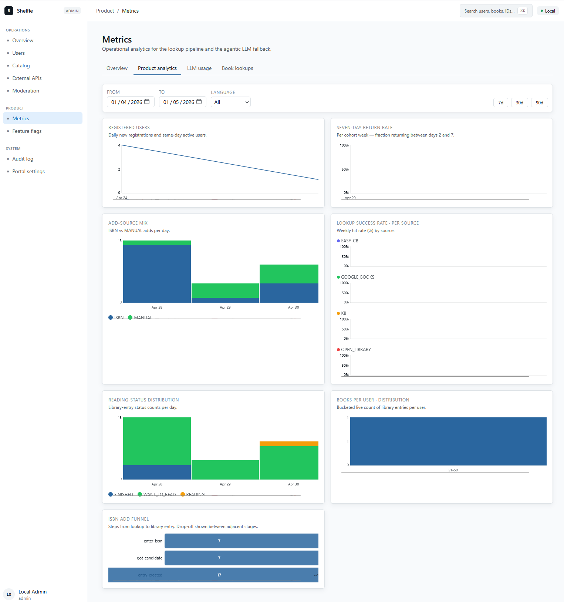 Figure 27. Screenshot — Analytics dashboard
|
|
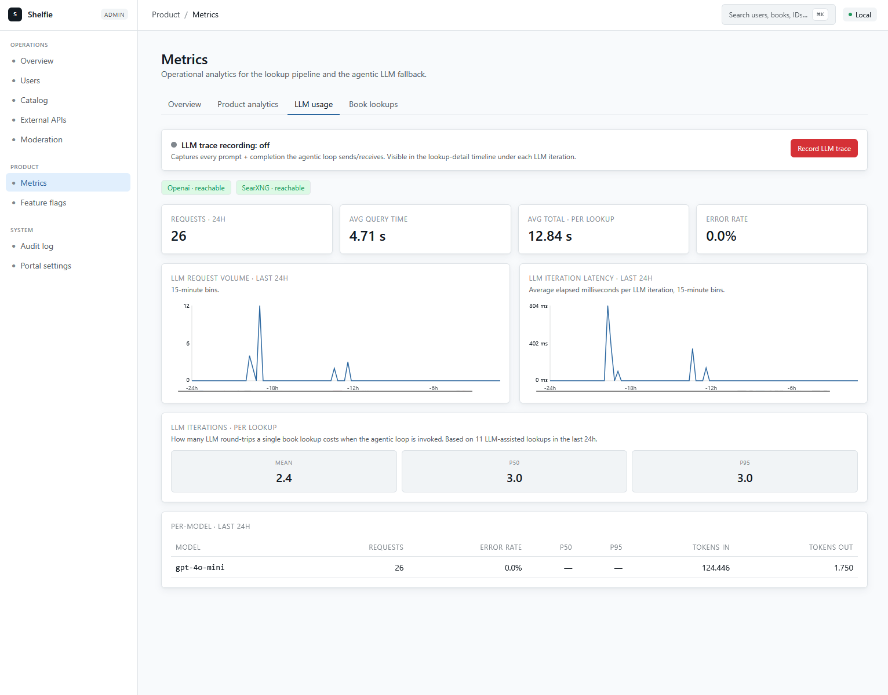 Figure 28. Screenshot — LLM metrics panel
|
|
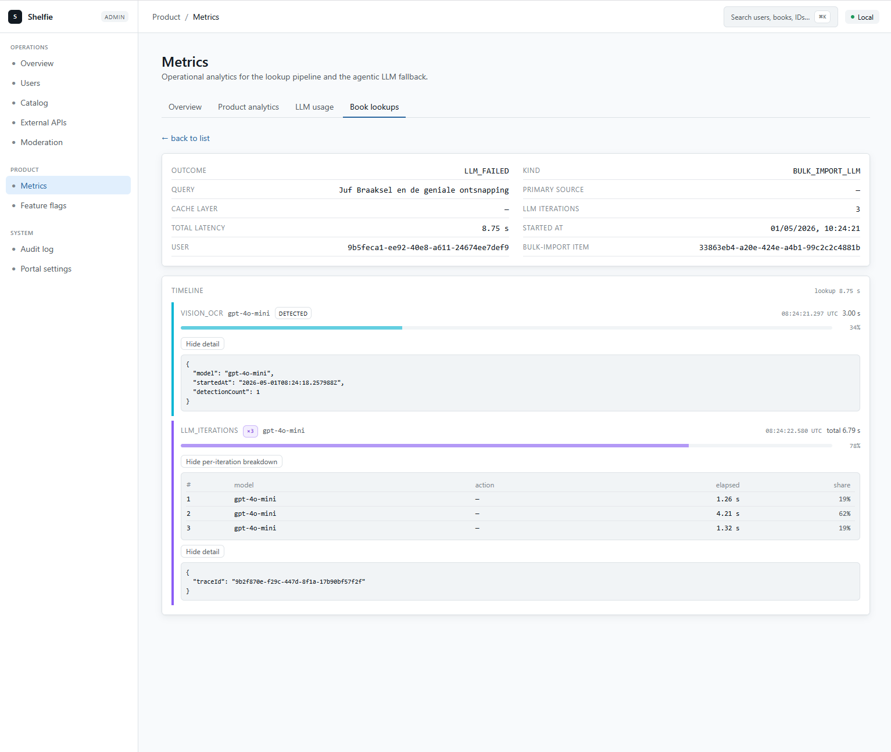 Figure 29. Screenshot — Lookup detail (replay)
|
4.7. Audit log
A read-only, filterable log of every admin write — actor, action, target, before/after snapshot, correlation id. The interceptor is wired so an operator cannot bypass it: the write is the audit row.
|
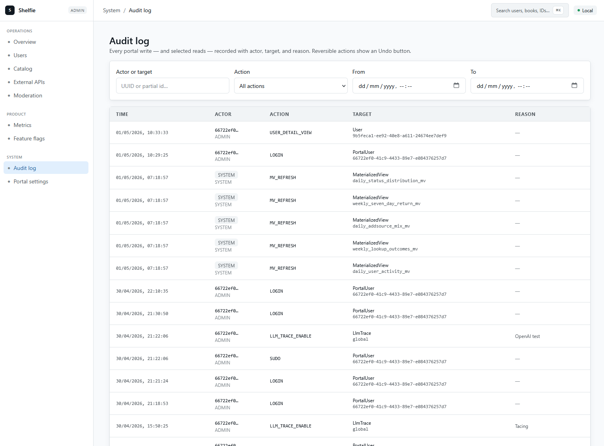 Figure 30. Screenshot — Audit log
|
5. Backend architecture
The backend is one Spring Boot 3.3 service on Java 21 fronting a single PostgreSQL 16 database. The conscious design choice is "boring on the outside, modular on the inside": one process, one database, one bundle to deploy — but inside the JVM the code is split by domain into independently testable modules with explicit boundaries.
This chapter is intentionally selective. The full design lives in
architecture/TECHNICAL_DESIGN.md; what follows is a tour of the few
characteristics that most affect operational risk, performance, and the
team’s ability to evolve the system.
5.1. Topology
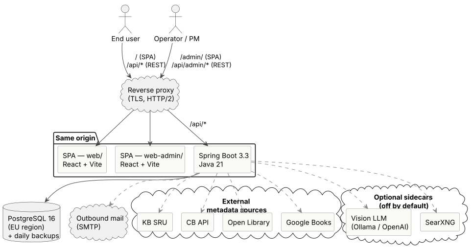
The same Spring Boot process exposes both API surfaces (/api/ for users,
/api/admin/ for the portal) on two distinct security filter chains with
two distinct cookies. Same-origin deployment removes CORS entirely and lets
the SameSite=Lax session cookies work without relaxation.
The MVP runs as a single backend instance. This is a deliberate choice that buys simplicity (in-memory sessions, in-process Caffeine cache, in-process Bucket4j rate limiter) at the cost of horizontal scalability; the migration path to multi-instance is documented and bounded (Spring Session + Redis, plus moving the lookup cache fully to its existing DB-backed second tier).
5.2. Internal module layout
Inside the JVM the code is split by domain into modules. Each module owns its entities, its repositories, its REST controller, its service layer, and its tests. Cross-module calls go through public service interfaces; no controller reaches into another module’s internals.
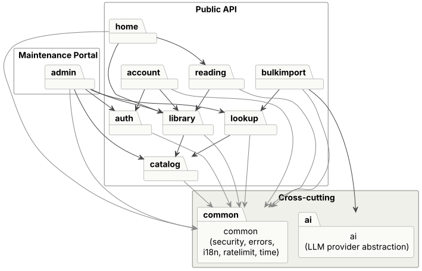
The discipline is enforced by ArchUnit tests; for example, nl.shelfie.admin.*
is forbidden from being imported by any package outside its tree, so a
public-API regression cannot accidentally take a dependency on portal-only
code.
5.3. The metadata-lookup pipeline
The most operationally interesting piece of the backend is the lookup pipeline. When a user types an ISBN, the orchestrator races priority-ordered external sources with a hard overall deadline, merges metadata primary-source-wins, caches the result in two tiers, and falls back to manual entry if nothing matches.
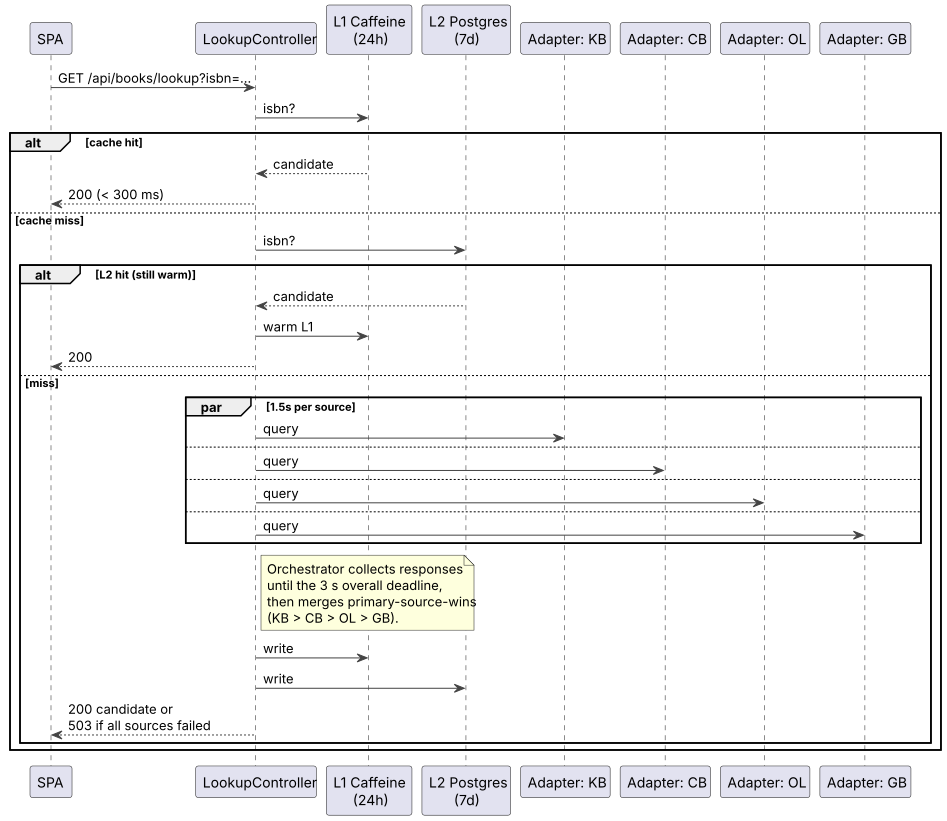
A separate Track-C path (LLM-agentic search) is invoked only when no ISBN match is found and the user has explicitly enabled the fallback. It runs as a small finite-state machine bounded by an iteration cap and a 25-second overall timeout.
5.4. Data model — the load-bearing rules
The database is intentionally small (about 20 tables across 34 migrations). A few rules are critical and easy to get wrong:
| Rule | Why it matters |
|---|---|
ISBN-13 is canonical — ISBN-10 is normalised on input |
One column ( |
Two kinds of |
User-submitted records must never leak across accounts; the catalog never swallows ad-hoc user entries. |
|
|
Reading + mood logs are append-only |
Aggregations (week stats, mood ribbon) read from the log; the
denormalised |
|
Per-user duplicate prevention is a database invariant, not an application-level check. |
Status transitions auto-populate |
The only way to a |
5.5. Security baseline
| Concern | Treatment |
|---|---|
Authentication |
Spring Security with a secure HTTP-only session cookie, SameSite=Lax, Argon2id password hashing. JWT is deliberately deferred until native mobile clients exist. |
CSRF |
Cookie-and-header pattern ( |
Rate limiting |
Bucket4j in-process buckets; per-IP on auth endpoints, per-user on the external lookup endpoint to protect upstream quotas. |
Maintenance Portal |
Separate cookie name, separate filter chain, mandatory TOTP MFA, sudo prompts on sensitive actions, write-audit interceptor on every admin write, ArchUnit boundary test that forbids public-API → admin-package imports. |
GDPR |
One-click data export (JSON); typed-confirmation account deletion that cascades library entries, private books, password-reset tokens, photo blobs, reading + mood logs, bulk-import items, and LLM traces in a single transaction. The cascade is explicit (not just FK CASCADE) so it is legible and survives schema drift. |
Storage |
Photo and bulk-import blobs are written to a configurable backend — filesystem locally, S3-compatible (AWS S3 or MinIO) in any multi-instance deployment. The bytes never enter Postgres. |
5.6. Observability
A single correlation id is set in the MDC by an early servlet filter and propagated through every log line, every external HTTP call, and every ProblemDetail response — so any user-facing error can be traced end-to-end from one request id.
Application metrics surface through Spring Boot Actuator + Prometheus exporter:
-
HTTP server requests with histogram buckets (so
histogram_quantile()works without a manual call-site rewrite). -
Per-source lookup latency and outcome.
-
LLM provider call latency, token in/out, error rate.
-
Materialised-view refresh times for the analytics dashboards.
The Maintenance Portal renders a subset of these as live charts so an operator can see the system’s pulse without leaving the portal for Grafana.
5.7. Testing strategy
| Layer | Tool | Approx. count |
|---|---|---|
Unit — pure logic (validators, services with mocked repos) |
JUnit 5 + Mockito + AssertJ |
~60 backend, ~25 frontend |
Slice — controllers + JSON wire format |
|
~17 backend |
Integration — real Postgres + (where relevant) WireMock for external sources, GreenMail for SMTP, MinIO for S3 |
Spring Boot test + Testcontainers |
Bounded count (~10), kept off the fast |
Component / page tests — UI behaviour over MSW-mocked APIs |
Vitest + React Testing Library + MSW |
28 frontend |
End-to-end smoke |
Playwright (the golden paths only) |
A handful, opt-in |
./gradlew test is the fast path (no containers); ./gradlew integrationTest
spins up Postgres + WireMock + GreenMail via Testcontainers and is run as
part of ./gradlew check. Spotless enforces formatting on every CI run.
5.8. What is intentionally not built yet
The following are explicitly deferred to keep the MVP shippable:
-
Horizontal scaling (single instance for now; Redis-backed sessions are the documented escape hatch).
-
A
Workentity (work / edition separation) — aBookis currently a single edition. -
Recommendations, social features, native mobile clients.
-
Background batch reconciliation between user-submitted books and the shared catalog (today these are kept strictly separate).
-
A staging environment (the local Docker Compose stack stands in for staging; production deployment is the next milestone).